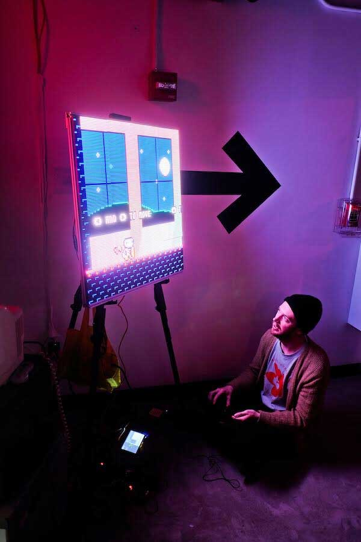

 Davydka (aka David Whitely) is a creative technologist, front-end engineer, software architect, and musician. He's always fascinated with interesting technical challenges and enjoys pushing the boundaries of his abilities. He's currently working full-time at Code and Theory.
David is passionate about art, music, technology, design, and exploring new tools and techniques for creating beautiful experiences. He has delivered real projects ranging from WebGL based digital installations to massive publication websites that scale. David likes to stay on top of the latest standards in web technology as well as build interactive hardware.
When not at work, he's likely testing out a new synthesizer in his band dead night. David lives in Brooklyn, NY, with his girlfriend Samantha and their dog, Donut.